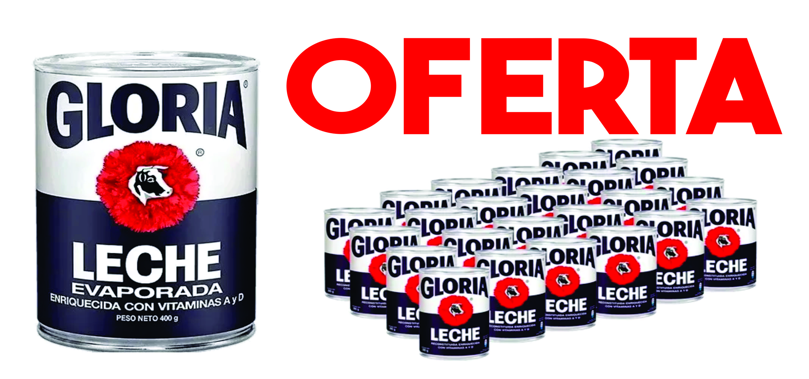

SUPER MERCADO
Comida con descuento - Ayudando al planeta
Comida con descuento - Ayudando al planeta

Compra productos de calidad a precios accesibles y reduce el desperdicio alimentario.
Comprar AhoraSuper Mercado es una plataforma creada para conectar negocios de comida con clientes inteligentes que buscan ahorrar.
Reducir el desperdicio de alimentos y apoyar a pequeños negocios.
Más de 1,000 productos rescatados y clientes satisfechos.